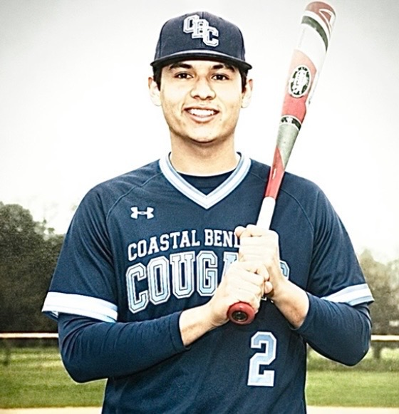
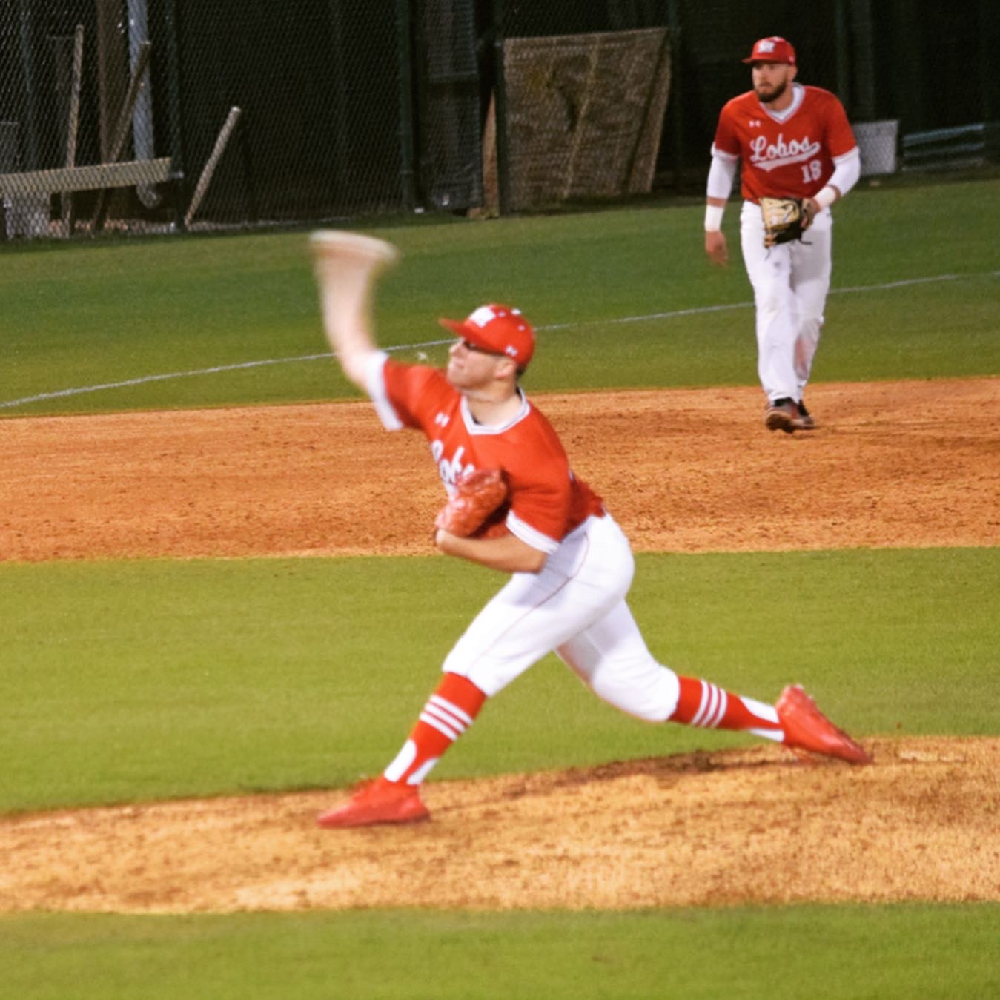
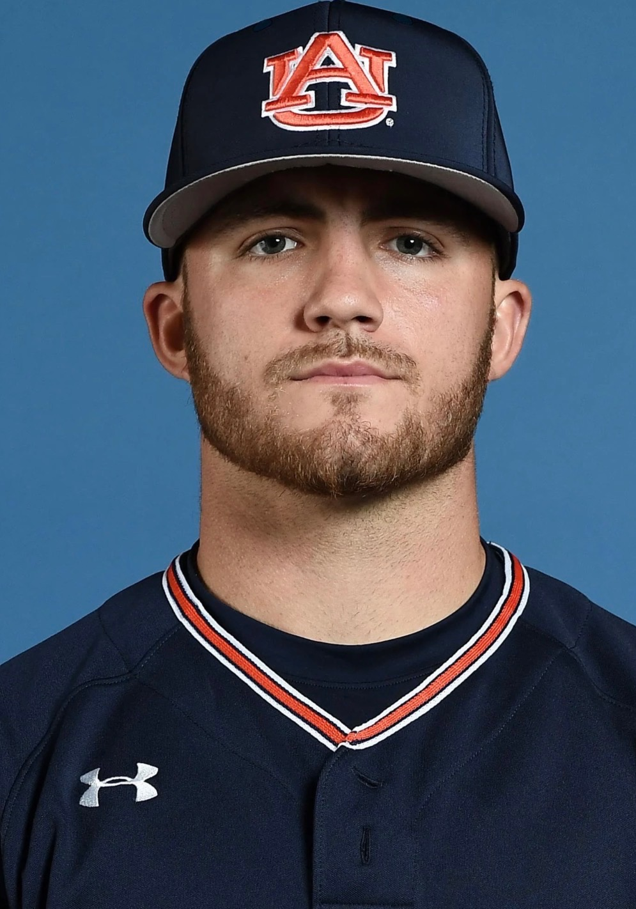
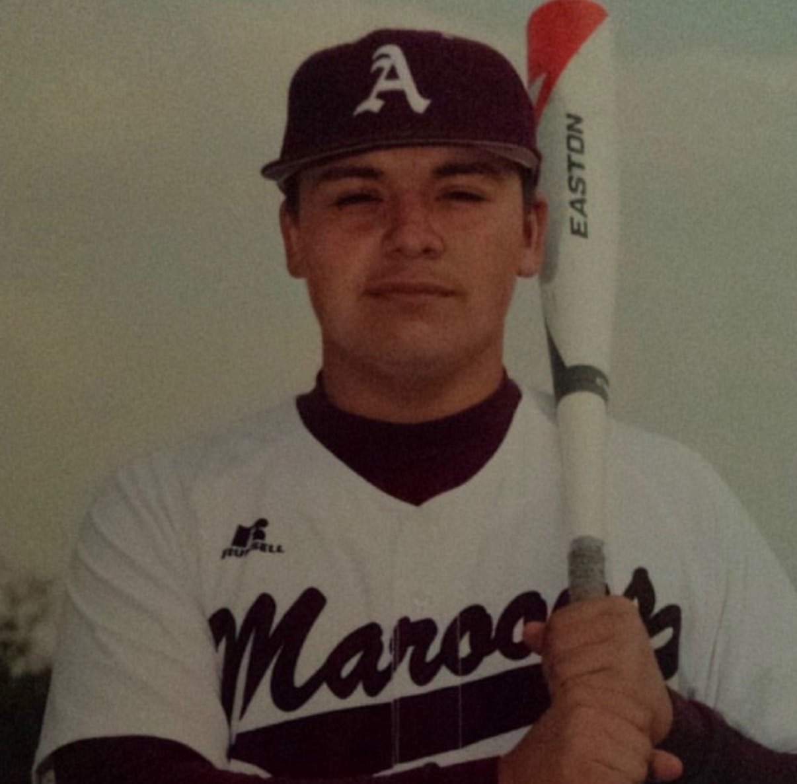
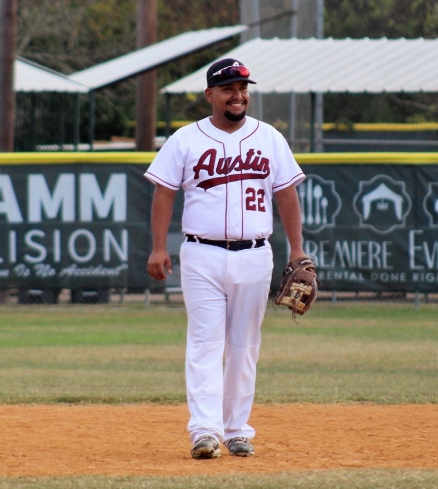
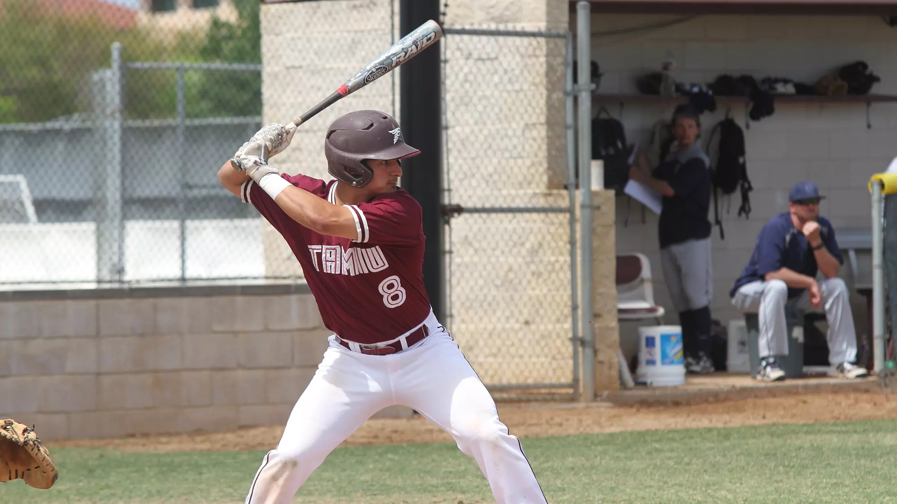

A3 SWAT Baseball is led by an Austin, Texas native with a competitive background built through the game. A three-year letterman at Austin High School and former middle infielder, Allik went on to play at Coastal Bend College before graduating from the University of Texas.

Alexander is a graduate of Austin High School (2015) and a three-year varsity baseball letterman. He went on to play baseball at Coastal Bend College before completing his degree at Texas State University.
Alexander is committed to developing athletes at a high level, focusing on discipline, growth, and maximizing performance on and off the field.

Dustin Jourdan is a former collegiate pitcher who began his career at Bowie High School before advancing to McLennan Community College, where he earned a scholarship to Ohio State University. At McLennan, he helped lead the program to a runner-up finish in the Junior College World Series and followed with a dominant 1.14 ERA sophomore season.
At Ohio State, Dustin had Tommy John surgery, which ultimately led to the end of his playing career. Following his time on the field, Jourdan transitioned into coaching, spending three years with Lonestar Baseball and focusing on player development, discipline, and competitive growth.

A 4-year varsity letterman from La Feria High School, Briar went on to play 4 years at Sul Ross State University. Following his college career, he has spent the last 4 years coaching players from 11U to 15U — developing baseball skills, baseball IQ, and character on and off the field.
Briar's goal is to prepare players to succeed at the next level while teaching lessons that carry into the real world. He believes in developing discipline, accountability, toughness, teamwork, and confidence in every athlete he coaches.

A former all-state Bowie Bulldog pitcher, Kyle is a Texas native who went on to pitch at Blinn College, where he earned the prestigious Leroy Dreyer MVP award along with all-conference honors. He later pitched for the Auburn Tigers, who were part of the 2019 College World Series.
Kyle is passionate about passing down the knowledge, discipline, and competitive mindset he developed throughout his baseball journey to the next generation of athletes. He is committed to helping young players grow both on and off the field while building confidence, work ethic, and a love for the game.

Zach Morgan is a former two-year letterman at Austin High School who brings four years of coaching experience and a passion for developing athletes on and off the field.
Known for his energy, leadership, and player-first approach, Zach focuses on building strong fundamentals, baseball IQ, confidence, and a competitive mindset while helping players maximize their potential through accountability and consistent development.

Oscar Peralta brings 4+ years of coaching experience working with athletes ages 12U–18U. An Austin native, he graduated from Navarro High School in 2021 as a four-year varsity starter, earning unanimous First-Team All-District honors as a utility player during his senior season. Following high school, Coach Oscar signed his letter of intent to continue at Huston–Tillotson University in Austin.
Although injuries shortened his playing career, his passion for baseball transitioned into coaching and mentorship. Coach Oscar is dedicated to helping athletes reach their full potential by building confidence, discipline, strong fundamentals, and a mindset for success both on and off the field.

Alex Cabezas is a 2013 graduate of Westlake High School, where he earned two letters in baseball and four in wrestling. He went on to play baseball at Texas A&M International University, where he had a standout career — earning First-Team All-Conference honors in the outfield and leading the conference in batting average.